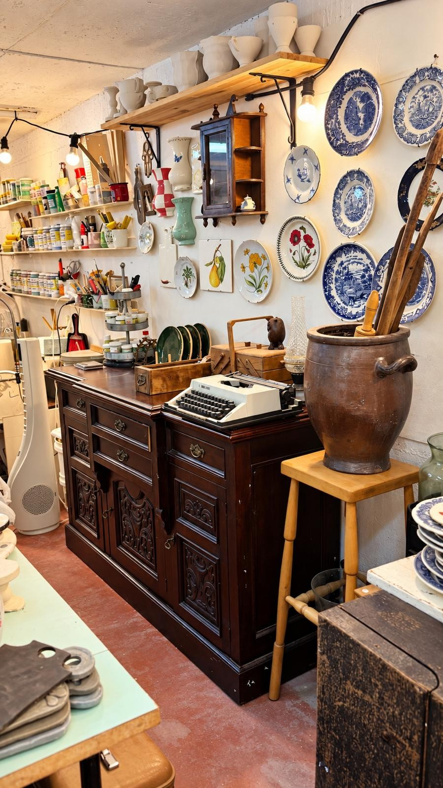
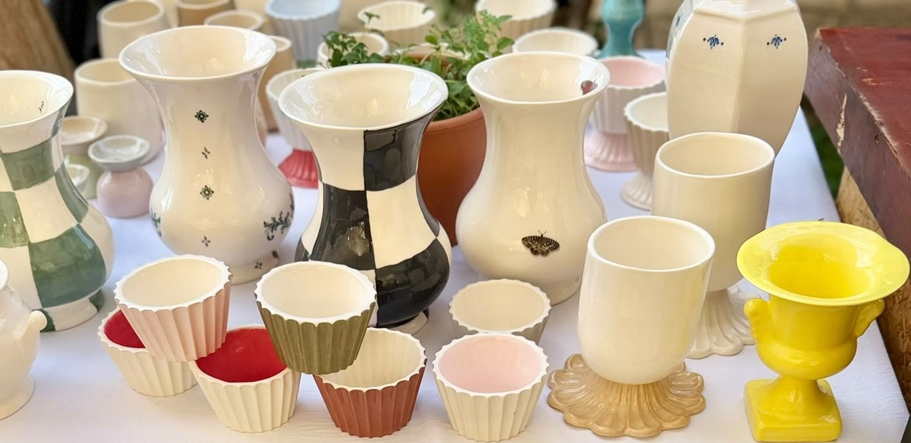
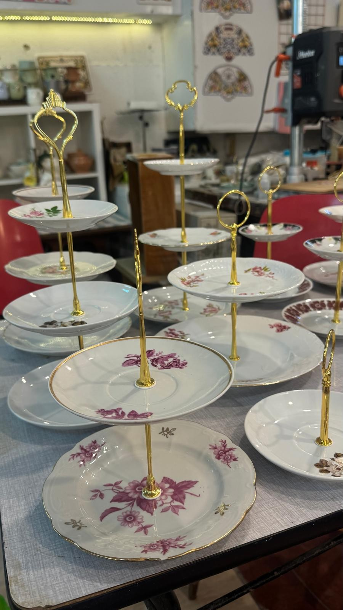

cortado
תודה, נורה
לשכנה שלנו בשניר



וינטג'
ועבודת יד
גלריה כפיים
וינטג', עתיקות וקרמיקה בעבודת יד
אוהבים אותך, נורה
אינסטגרם
פייסבוק
וואטסאפ
קיבוץ שניר · על הדשא ליד המרכולית

 אינסטגרם
אינסטגרם פייסבוק
פייסבוק וואטסאפ
וואטסאפ